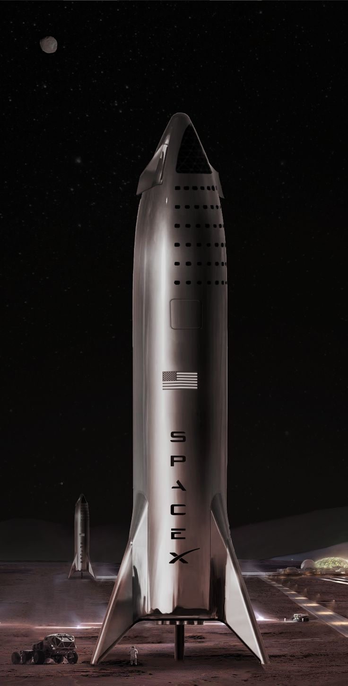

My Portfolio Landing Page
My name is
Felix Nderitu

This are other projects that i created
- project-xs-0.9
- Project-xs-0.99
This project was for practise and i created it using HTML
project-xs-0.9It is for ccs styling i used HTML and CSS
project-xs-0.99About Me
For a very long time i was interested in learning how to code,I also wanted to know how websites work behind what we see on the interface. I love solving problems and i knew that by learning how to code i would be able to come with systems that can solve tasks thst would have required a lot of mental and maybe even physical strength.
My Current InterestsI generaly love most things to do with science and technology but there a few areas that i realy follow with lots of passion.
Here are some areas that i work on during my free time
- Space exploration
- Artificial intelligence
- Bionics and prosthetics
- Jet and rocket engine propulsion
- Energy